Last Updated: 2025-09-25
This Create a Trino UDF function with Java tutorial assumes you are conceptually familiar with Trino as a query engine, confident with SQL, and are interested in building your own User Defined Function (UDF). Additionally, it is assumed you are comfortable programming in Java and have a foundational knowledge with Git and Maven.
In this tutorial, you will learn by example how to develop, build, deploy, and test your own custom UDF with Trino. You will have a working Java project template by the end of this tutorial that you can use as a basis for building additional UDFs to meet your specific needs.
Once you've completed this tutorial, you will be able to:
Using the git tooling of your choice, clone the https://github.com/lestermartin/trino-udf-exploration repository onto your workstation. Feel free to fork this repo to your own account first if you prefer.
Navigate into the cloned copy of the repo, then navigate into a subdirectory named plugin-udfs, then navigate into another subdirectory named plugin-udfs, and verify there is a file named pom.xml.
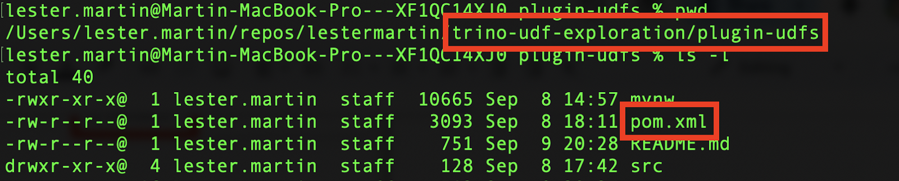
Use Maven to compile the example UDF code.
mvn package -Dmaven.test.skip=trueEnsure the build is successful.
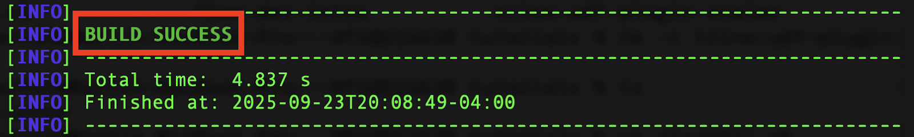
A new zip file will now be created in the target subdirectory.
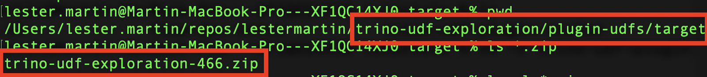
Using your workstation tools, copy the zip file to another location on your workstation and unzip it. Verify the newly created folder has a number of jar files.
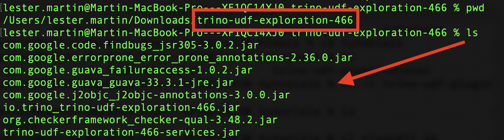
After reviewing the information in Trino in a Docker container, run the following command.
docker run --name trino -d -p 8080:8080 --volume YOUR-UNZIPPED-DIR:/usr/lib/trino/plugin/trino-udf-exploration trinodb/trinoUsing your Docker tooling, verify that the container started successfully.
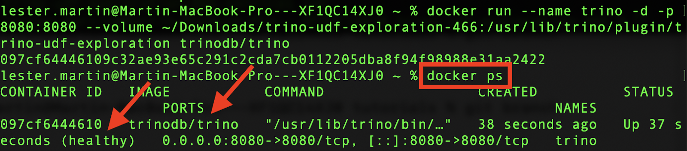
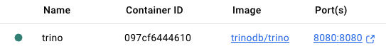
Follow the Executing queries instructions to verify the Trino cluster is operational.
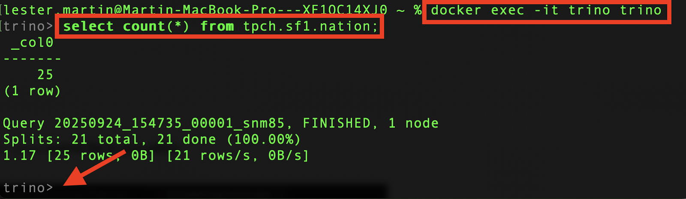
Leave the Trino client application open to the trino> prompt.
Open the ExampleStringFunction.java source file in your editor.
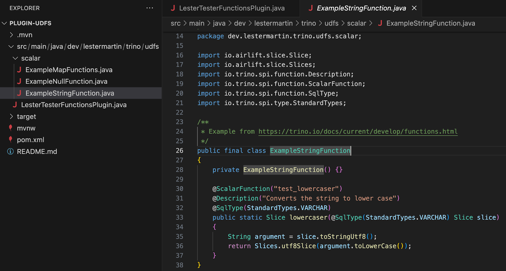
Review the lowercaser() function which can be utilized from SQL.
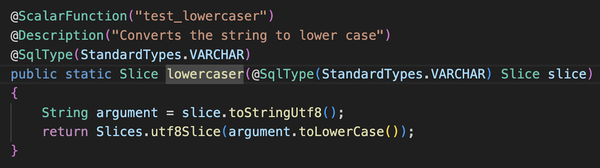
The @ScalarFunction annotation indicates the name of the function that will be available in SQL.
The @SqlType annotation above the method name indicates the data type that the scalar (i.e. row-level) SQL function will return.
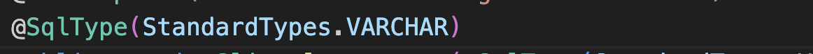
The @SqlType annotation in the argument list indicates the data type it is expecting to be passed in.
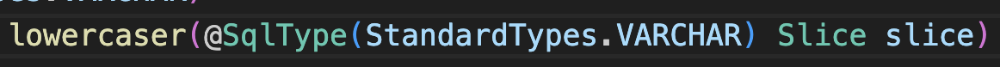
And the simple implementation is just forcing the passed in string to be all lower-case before being returned.
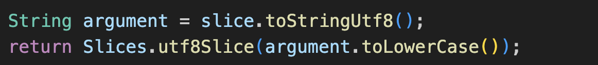
In the open Trino client application, type the following at the trino> prompt to list the test_lowercaser, and possibly other, functions available in SQL.
SHOW FUNCTIONS LIKE '%test_%';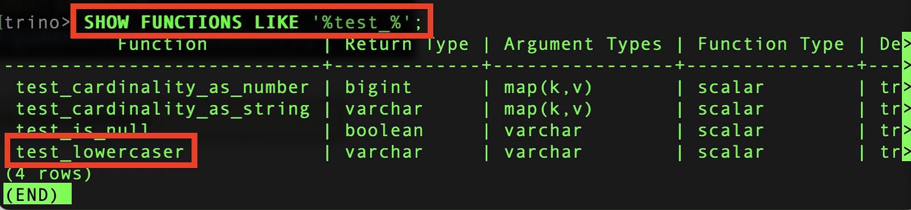
Test out the example function with scenarios like the following.
select test_lowercaser('AbCdEfGhIjK... that is ENOUGH!');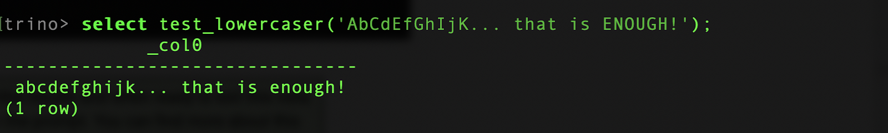
Feel free to explore other scenarios with this function or try any of the other example functions that are present.
In the ExampleStringFunction.java file, make a copy of the lowercaser() function as well as the following modifications:
lowercaser to reverser@ScalarFunction annotation so the SQL function will be named test_reverser@Description annotation's value to Reverses the order of the string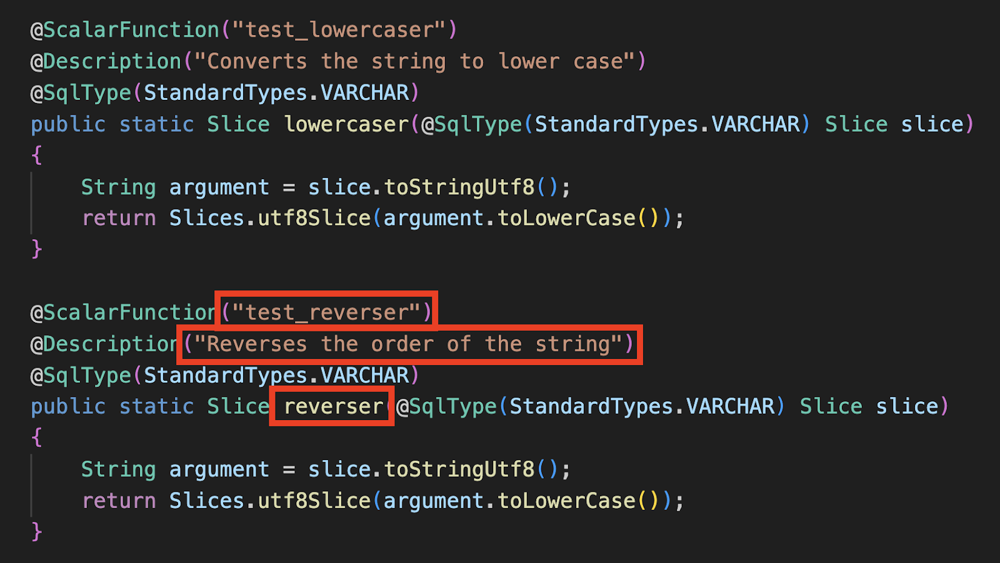
Change the body of the newly created method to implement the logic required to reverse the order of the string. The following is one possible approach.
String argument = slice.toStringUtf8();
StringBuilder stringBuilder = new StringBuilder(argument);
stringBuilder.reverse();
return Slices.utf8Slice(stringBuilder.toString());Run the Maven build again.
mvn package -Dmaven.test.skip=trueEnsure it completed successfully and a new zip file was just created.
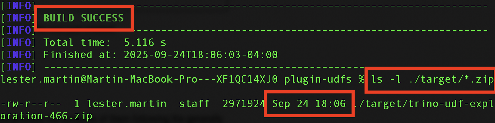
Exit from the Trino client.
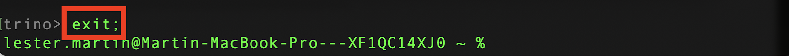
Run the following two commands to shutdown and destroy the Docker container.
docker stop trino
docker rm trino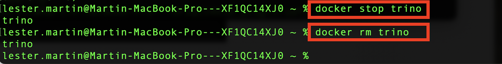
Using your workstation tools, copy the regenerated zip file to the same location on your workstation and unzip it again. Verify the newly created folder has a number of jar files.
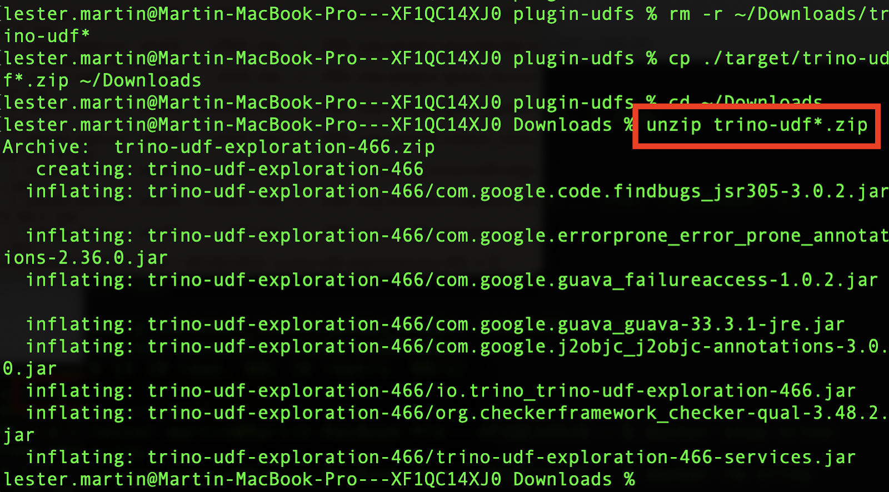
As before, start Trino again.
docker run --name trino -d -p 8080:8080 --volume YOUR-UNZIPPED-DIR:/usr/lib/trino/plugin/trino-udf-exploration trinodb/trinoUsing your Docker tooling, verify that the container started successfully.
Start the Trino CLI, verify the new function exists, and verify it works correctly..
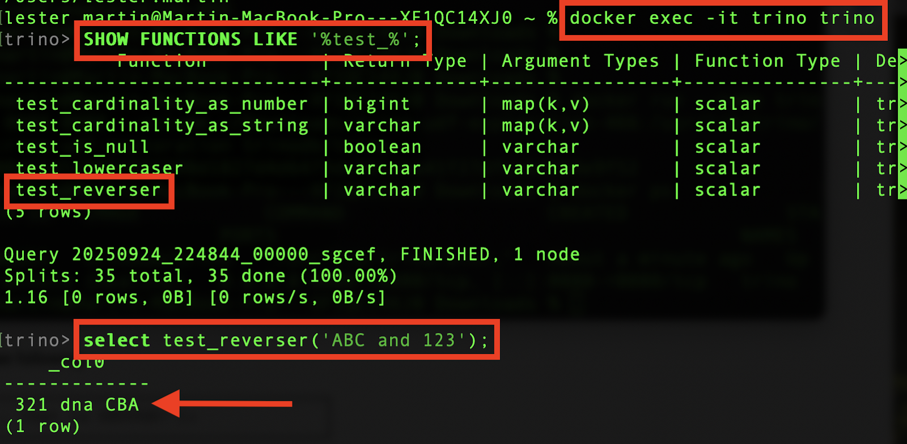
It works!!
Exit from the Trino client.
Run the following two commands to shutdown and destroy the Docker container.
docker stop trino
docker rm trinoCongratulations, you've completed the Create a Trino UDF function with Java tutorial!
Check out some other examples...